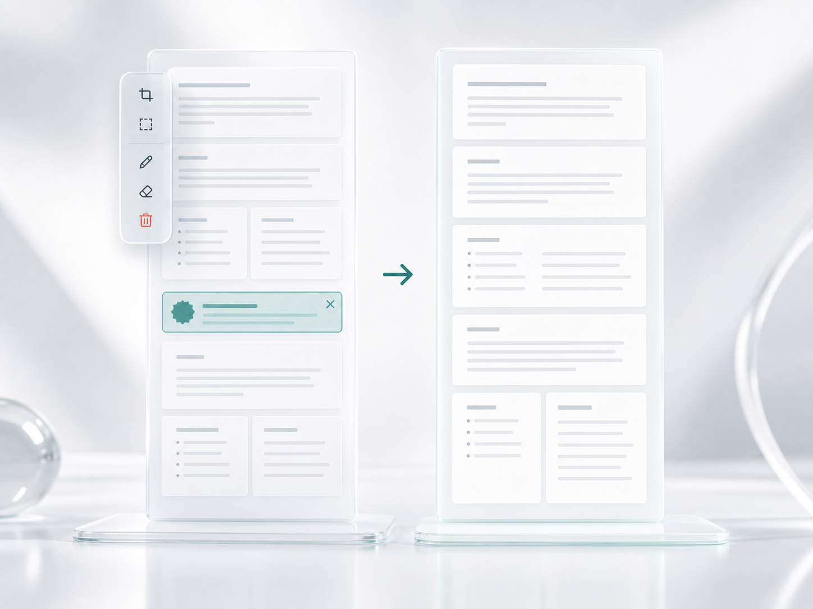

Client evidence packet
Visual record for the Moreno filing review
The reviewer needs one clean screenshot with document names, chronology, and decision context intact while page noise is removed before export.
Why this page is being captured
The case team is archiving a visual proof record for an internal review. The chronology, document summaries, and filing context need to stay readable.
Evidence timeline
These rows create the record's chronology. They are part of the filing context and should remain in the final record.
Source packet assembled with screenshots, notes, and reviewer markers.
KeepReviewer requested a shorter export with clutter removed and source context intact.
?KeepFinal capture prepared after redundant page elements were identified.
KeepDocuments in scope
Long page capture used for review and export.
Chronology and status notes that must remain intact.
Context for why the page needs a clean visual record.
Shorter evidence view after irrelevant content is removed.
Summer workflow webinar invitation
This invitation is not part of the Moreno filing review. It interrupts the evidence sequence, adds height, and contains no filing facts that belong in the final export.
The review team marked it as optional coordination material that can be excluded from the archived visual record.
Clean record after the cut
After removing the webinar band, the timeline connects directly to the document summary and decision note. The page becomes shorter without losing the context that makes it trustworthy.
